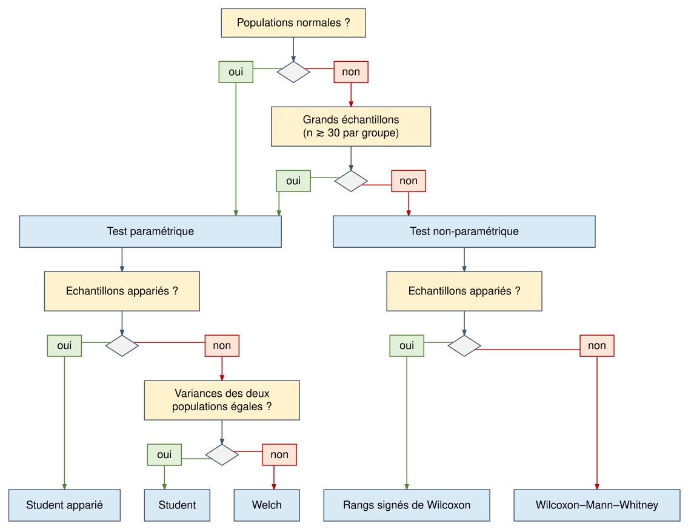

| before | after | diff | |
|---|---|---|---|
| 1 | 6 | 7 | 1 |
| 2 | 9 | 11 | 2 |
| 3 | 10 | NA | NA |
| 4 | 11 | 12 | 1 |
| 5 | 13 | 13 | 0 |
| 6 | 14 | 15 | 1 |
TP1 – Tests d’égalité des moyennes
Introduction
Objectifs du TP
- Mettre en oeuvre un test de comparaison de moyennes sur base d’un exemple simple (exercice sur papier avec une calculatrice ou un tableur)
- Interpréter les résultats du point de vue statistique
- Interpréter les résultats du point de vue biologique
Connaissances mobilisées
- Paramètres d’échantillons (moyenne, variance, écart-type d’échantillons)
- Estimation des paramètres de population
- Test d’hypothèse (hypothèse à tester, hypothèses de travail)
- Distribution de probabilité de Student
Compétences
- Formuler l’hypothèse à tester (hypothèse nulle, hypothèse alternative)
- En se basant sur le logigramme fourni au cours, choisir un test approprié en tenant compte de la nature des données, et justifier ce choix en évaluant la validité des hypothèse de travail
- Mise en oeuvre du test
- En utilisant une calculatrice ou un tableur, calculer la statistique du test
- En utilisant un tableau des valeurs critiques, évaluer le risque de première erreur
- Interprétation des résultats du test
- Interprétation statistique : formuler la décision et évaluer le risque associé
- Interprétation biologique
Énoncé
On a testé l’effet d’un médicament, en mesurant sur 6 souris le taux d’immunoglobuline avant et après le traitement. Pour le test, l’une des 6 mesures a échoué, on a donc une valeur non définie (NA).
Voici les données.
Ci-dessous, nous vous posons une série de questions qui vous amèneront pas à pas à :
- calculer des statistiques descriptives de l’échantillon
- estimer les paramètres de la population
- concevoir, mettre en oeuvre et interpréter un test d’hypothèse concernant l’effet de ce traitement
- mesurer l’impact du choix de la méthode de comparaison de moyenne sur le résultat du test
Questions
Q1. Dans cette configuration, en termes de statistiques, en quoi consistent les populations et les échantillons ?
Q2. Calculez les paramètres d’échantillon suivants pour les mesures avant et après traitement, et pour les différences, après avoir éliminé les données incomplètes :
- Somme
- Somme des carrés
- Moyenne
- Variance
- Écart-type
Indiquez les formules avec les symboles, remplacez ensuite ces symboles par les valeurs numériques correspondantes, et calculez le résultat. Note: à l’examen, vous ne devrez pas calculer la valeur numérique du résultat.
Q3. A partir des données de l’échantillon, estimez les paramètres de la population suivants :
- Moyenne
- Variance
- Écart-type
Indiquez les formules avec les symboles, remplacez ensuite ces symboles par les valeurs numériques correspondantes, et calculez le résultat. Note: à l’examen, vous ne devrez pas calculer la valeur numérique du résultat.
Q4. Dans le logigramme ci-contre, identifiez le chemin à suivre pour choisir le test approprié. Justifiez vos choix à chaque étape du trajet.
Q5. Formulez l’hypothèse nulle, l’hypothèse alternative et les hypothèses de travail.
Q6. Comment calculez-vous la statistique de test ? Indiquez la formule avec les symboles, puis la formule avec les valeurs numériques.
Q7. Utilisez la table de la distribution fournie pour identifier le seuil de rejet de l’hypothèse nulle, avec un risque d’erreur de premier type \(\alpha = 0.05\)
Q8. Interprétez le résultat
Solutions
Q1. Populations et échantillons
Dans cette configuration, en termes de statistiques, en quoi consistent les populations et les échantillons ?
Population biologique étudiée
L’ensemble des souris qu’on pourrait utiliser de façon équivalente pour cette expérience (même souche, même sexe, conditions d’élevage\(\cdot\)). La taille de cette population (\(N\)) est difficile à établir, elle dépend de la capacité totale des animaleries susceptibles de produire des souris de cette souche. En tout cas il s’agit d’une population potentiellement très large.
Variables aléatoires
Nous mesurons deux valeurs
- Les taux d’immunoglobulines avant traitement, représentées par une variable aléatoire \(X_a\)
- Les taux d’immunoglobulines après traitement, , représentées par une variable aléatoire \(X_t\)
Nous pouvons également calculer, pour chaque individu, la différence entre valeur avant et après traitement, représentée par une variable aléatoire \(D\).
Chacune de ces distributions de valeurs est une population, au sens statistique du terme.
Échantillons observés
Pour rappel, le terme échantillon peut prêter à confusion puisqu’il est utilisé par les biologistes pour désigner soit un prélèvement de matériel biologique, et pour les statisticiens comme un sous-ensemble d’éléments tirés aléatoirement dans une population. La confusion est d’autant plus grande que la cardinalité diffère entre ces deux acceptions du mot : pour cette expérience-ci, on dispose de 6 échantillons biologiques avant traitement, et de 5 échantillons biologiques après traitement, mais dans l’analyse qui va suivre on considérera qu’on a 2 échantillons statistiques, l’un avant traitement, et l’autre après traitement.
L’expérience porte sur 6 souris, mesurées avant et après traitement.
- Avant traitement : \(6\) mesures disponibles.
- Après traitement : \(5\) mesures disponibles (une mesure manquante).
- Nous ne disposons donc que de 5 paires d’observations complètes, sur lesquelles nous pouvons calculer une différence
Appariement des observations
Les observations sont appariées puisque les mesures avant et après traitement proviennent des mêmes souris. Pour étudier l’effet du traitement, nous allons donc analyser les différences individuelles entre les mesures après et avant traitement. Nous disposons de 5 paires complètes, permettant de calculer 5 différences.
Pour la suite de cette analyse, nous ne prendrons en considération que les souris pour lesquelles on dispose des deux observations. Nous utiliserons ci-après le symbole \(n\) pour désigner le nombre d’observations complètes (\(n=5\)).
Q2. Paramètres d’échantillon
Calculez les paramètres d’échantillon suivants pour les mesures avant et après traitement, et pour les différences, en ne prenant en compte que les individus pour lesquels on dispose de données complètes :
- Somme
- Somme des carrés
- Moyenne
- Variance
- Écart-type
Indiquez les formules avec les symboles, remplacez ensuite ces symboles par les valeurs numériques correspondantes, et calculez le résultat. Note: à l’examen, vous ne devrez pas calculer la valeur numérique du résultat.
Moyennes d’échantillons
Nous utilisons les indices suivants
- \(a\): avant traitement
- \(t\): après traitement
- \(d\): différence
La variable \(x_{a,i}\) représente la valeur observée avant traitement pour le \(i^{ème}\) échantillon avant traitement.
\[\bar{x}_a = \frac{1}{n}\sum_{i=1}^{n} x_{a,i} = (6 + 9 + 11 + 13 + 14) / 5 = 10.6\] \[\bar{x}_t = \frac{1}{n} \sum_{i=1}^{n} x_{t,i} = (7 + 11 + 12 + 13 + 15)/5 = 11.6\]
\[\bar{x}_d = \frac{1}{n}\sum_{i=1}^{n} x_{d,i} = (1 + 2 + 1 + 0 + 1)/5 = 1\]
Variances d’échantillons
A partir d’ici nous ne montrons le détail de calcul que pour l’échantillon avant traitement (indice \(a\)). Les formules de calcul peuvent facilement être transposées aux résultats après traitement, ou à la différence.
\[ \begin{aligned} s^2_a &= \frac{1}{n} \sum_{i=1}^{n} (x_{a,i}- \bar{x}_a)^2 = \frac{1}{n} \sum_{i=1}^{n} (x_{a,i})^2 - \bar{x}_a^2 \\ &= (36 + 81 + 121 + 169 + 196)/5 - 10.6^2 = 8.24 \end{aligned} \]
Écarts-types d’échantillons
\[s_a = \sqrt{s_a^2} = \sqrt{8.24} = 2.87\]
| n | sum | sumsquares | sample_mean | sample_var | sample_sd | |
|---|---|---|---|---|---|---|
| before | 5 | 53 | 603 | 10.6 | 8.24 | 2.8705 |
| after | 5 | 58 | 708 | 11.6 | 7.04 | 2.6533 |
| diff | 5 | 5 | 7 | 1.0 | 0.40 | 0.6325 |
Pour rappel, la variance d’échantillon telle que calculée ci-dessus sous-estime la variance de la population, car elle mesure les carrés des distance par rapport à la moyenne de l’échantillon (\(\bar{x}\)) et non celle de la population (\(\mu\)). La question suivante porte donc sur la correction à apporter afin d’obtenir des estimateurs non-biaisés de la variance et de l’écart-type des populations.
Q3. Estimation des paramètres des populations
Q3. A partir des données de l’échantillon, estimez les paramètres de la population suivants :
- Moyenne
- Variance
- Écart-type
Indiquez les formules avec les symboles, remplacez ensuite ces symboles par les valeurs numériques correspondantes, et calculez le résultat. Note: à l’examen, vous ne devrez pas calculer la valeur numérique du résultat.
Moyennes de populations
Comme vu au cours, la moyenne d’échantillon (\(\bar{x}\)) est un estimateur non-biaisé de la moyenne de population (\(\mu\)). Ceci s’applique aux trois populations considérées :
- avant traitement (indice \(a\))
- après traitement (indice \(t\))
- différence (diff, indice \(d\))
Note : l’accent circonflexe au-dessus d’un symbole mathématique indique qu’il s’agit d’un estimateur de la variable de population considérée : \(\hat{\mu}\) signifie “estimateur de \(\mu\)”.
\[\hat{\mu}_a = \bar{x}_a = \frac{1}{n}\sum_{i=1}^{n} x_{a,i} = (6 + 9 + 11 + 13 + 14) / 5 = 10.6\] \[\hat{\mu}_t = \bar{x}_t = \frac{1}{n} \sum_{i=1}^{n} x_{t,i} = (7 + 11 + 12 + 13 + 15)/5 = 11.6\]
\[\hat{\mu}_d = \bar{x}_d = \frac{1}{n}\sum_{i=1}^{n} x_{d,i} = (1 + 2 + 1 + 0 + 1)/5 = 1\]
Estimation des variances des populations
\[ \begin{aligned} \hat{\sigma^2_a} &= \frac{1}{n - 1} \sum_{i=1}^{n} (x_{a,i}- \bar{x}_a)^2 = \frac{1}{n - 1} \left( \sum_{i=1}^{n} (x_{a,i})^2 - n \bar{x}_a^2 \right) \\ &= (36 + 81 + 121 + 169 + 196 - 5 \cdot 10.6^2) / 4 = 10.3 \end{aligned} \] \[ \begin{aligned} \hat{\sigma^2_t} &= \frac{1}{{n} - 1} \sum_{i=1}^{n} (x_{t,i}- \bar{x}_t)^2 = \frac{1}{{n} - 1} \left( \sum_{i=1}^{n} (x_{t,i})^2 - {n} \bar{x}_t^2 \right) \\ &= (49 + 121 + 144 + 169 + 225 - 5 \cdot 11.6^2) / 4 = 8.8 \end{aligned} \]
\[ \begin{aligned} \hat{\sigma^2_d} &= \frac{1}{n - 1} \sum_{i=1}^{n} (x_{d,i}- \bar{x}_d)^2 = \frac{1}{n - 1} \left( \sum_{i=1}^{n} (x_{d,i})^2 - n \bar{x}_d^2 \right) \\ &= (1 + 4 + 1 + 0 + 1 - 5 \cdot 1^2) / 4 = 0.5 \end{aligned} \]
Estimation des écarts-types des populations
\[\hat{\sigma}_a = \sqrt{\hat{\sigma^2}_a} = \sqrt{10.3} = 3.21\]
\[\hat{\sigma}_t = \sqrt{\hat{\sigma^2}_t} = \sqrt{8.8} = 2.97\] \[\hat{\sigma}_d = \sqrt{\hat{\sigma^2}_d} = \sqrt{0.5} = 0.71\]
| n | sum | sumsquares | sample_mean | sample_var | sample_sd | pop_var_est | pop_sd_est | |
|---|---|---|---|---|---|---|---|---|
| before | 5 | 53 | 603 | 10.6 | 8.24 | 2.8705 | 10.3 | 3.2094 |
| after | 5 | 58 | 708 | 11.6 | 7.04 | 2.6533 | 8.8 | 2.9665 |
| diff | 5 | 5 | 7 | 1.0 | 0.40 | 0.6325 | 0.5 | 0.7071 |
Q4. Choix du test
Dans le logigramme ci-contre, identifiez le chemin à suivre pour choisir le test approprié. Justifiez vos choix à chaque étape du trajet.

Astuce : il existe plusieurs réponses possibles concernant le chemin à suivre dans le logigramme et le test finalement retenu. Ce qui compte ici est de mener un raisonnement cohérent, appuyé sur la nature des données.
Les échantillons sont appariés, on applique donc un test de Student pour échantillons appariés. Nous allons donc restreindre l’analyse aux échantillons complets, c’est-à-dire ceux pour lesquels on dispose à la fois de la valeur avant et après le traitement. Nous disposons donc de 5 paires de mesures. L’analyse portera sur les différences individuelles entre valeurs après et avant traitement.
Les populations sont-elles normales ? Sur base des données à notre disposition nous ne sommes pas en mesure de vérifier la normalité car le test de normalité (Shapiro) est inefficace avec de si petits échantillons (nous le verrons dans les cours suivants).
Choix (1), raisonnement biologique :
Justification : le taux individuel d’IG dépend de facteurs multiples, ayant un effet plus ou moins additif, ce qui fait qu’il tendrait vers la normalité. Si les valeurs avant et après traitement suivent des distributions normales, la différence entre elles suit également une distribution normale. Sur base de ce raisonnement, on pourrait postuler la normalité et s’orienter vers un test paramétrique.
Les échantillons sont appariés, on applique donc le test de Student pour échantillons appariés
Choix (2) : option prudente, sans postuler la normalité.
L’alternative prudente est de ne pas postuler la normalité.
La question suivante porte sur la taille des échantillons. Elle est faible (6 et 5 observations). On s’oriente donc vers un test non paramétrique.
Les échantillons sont appariés, on applique donc le test des rangs signés de Wilcoxon
Nous allons développer ci-après le test paramétrique (Student apparié). Dans un deuxième temps nous appliquerons les autres tests et comparerons les résultats.
Q5. Formulation des hypothèses
Formulez l’hypothèse nulle, l’hypothèse alternative et les hypothèses de travail.
Hypothèse nulle
L’hypothèse nulle est que le taux moyen d’immunoglobuline est égal entre les mesures avant et après le traitement.
\[H_0: \mu_t = \mu_a\]
où \(\mu_a\) et \(\mu_t\) sont les moyennes populationnelles du taux d’IG avant et après traitement, respectivement (\(a\) pour “avant” traitement, \(t\) pour les souris “traitées”).
Plus précisément, comme les échantillons sont appariés, on teste la nullité de la moyenne des différences entre les mesures avant et après traitement chez le même individu.
\[H_0: \delta = 0\] où \(\delta\) est la moyenne populationnelle des différences individuelles entre mesures d’IG avant et après traitement.
En pratique, la moyenne des différences égale la différence entre les moyennes avant et après traitement.
\[\delta = \mu_{t} - \mu_{a}\] où \(\mu_t\) et \(\mu_a\) sont respectivement les moyennes populationnelles des taux d’IG après et avant traitement.
Hypothèse alternative
L’énoncé ne fournit aucune indication concernant une éventuelle directionnalité du test. Nous appliquerons donc un test bilatéral, dont l’hypothèse alternative est formulée comme suit.
\[H_1: \mu_t \neq \mu_a\]
ou de façon équivalente
\[H_1: \delta \neq 0\]
Hypothèses de travail
Nous avons choisi le test de Student apparié. Les hypothèses de travail sous-jacentes sont que les différences individuelles entre mesures avant et après suivent une distribution normale.
Q6. Calcul de la statistique du test
Comment calculez-vous la statistique de test ? Indiquez la formule avec les symboles, puis la formule avec les valeurs numériques.
\[t_d = \frac{\hat{\delta}}{\hat{\sigma}_{\bar{d}}} = \frac{\bar{d}}{s_d/\sqrt{n - 1}} = \frac{1.0}{0.6325/\sqrt{4}} = 3.162\]
où
- \(\bar{d}\) est la moyenne des différences entre échantillons appariés (mesures après moins mesure avant traitement)
- \(s_d\) est l’écart-type (non corrigé) des différences
- \(n\) est le nombre de souris pour lesquelles on dispose des mesures avant et après traitement
Q7. Seuil de rejet
Utilisez la table de la distribution fournie pour déterminer le seuil de rejet de l’hypothèse nulle, avec un risque d’erreur de première espèce \(\alpha = 0.05\)
La première étape est de déterminer les degrés de liberté. Nous disposons de \(n = 5\) mesures, ce qui nous donne \(\nu = n - 1 = 4\) degrés de liberté.
Nous effectuons un test bilatéral, le risque de \(0.05\) doit donc être réparti entre les queues gauche et droite de la distribution de Student. Nous cherchons donc la valeur de \(t_{\text{theor}}\) dans la colonne \(1 - \alpha/2 = 0.975\)
Dans la table de Student (Table A.1) nous localisons la ligne correspondant à \(\nu=4\) degrés de liberté (d.d.l.), et sur cette ligne nous cherchons la valeur critique correspondant à \(\alpha=0/05\) (en-têtes de colonnes).
Ceci nous donne une valeur critique \(t_\text{theor}=2.776\).
Q8. Interprétation du résultat
Au fil des sections précédentes, nous avons a calculé la statistique du test \(t_{\text{obs}} = 3.162\). Nous observons qu’elle est supérieure à la valeur critique \(t_\text{theor}=2.776\). Nous rejetons donc l’hypothèse nulle.
Chez les cinq souris pour lesquelles les deux mesures sont disponibles, le taux d’immunoglobulines augmente en moyenne de 1 unité après traitement. Le test de Student apparié indique que cette différence est statistiquement significative au seuil de 5 % (\(t_{\text{obs}=3.162\), \(t_\text{theor}=2.776\) avec \(\text{ddl=4}\)), sous l’hypothèse de normalité des différences. Ce résultat suggère un effet du traitement, mais n’est pas conclusif à lui seul, car il faudrait avoir effectué parallèlement un contrôle avec un groupe témoin, non-traité, dont on aurait pris les mesures aux mêmes moments et dans les mêmes conditions.